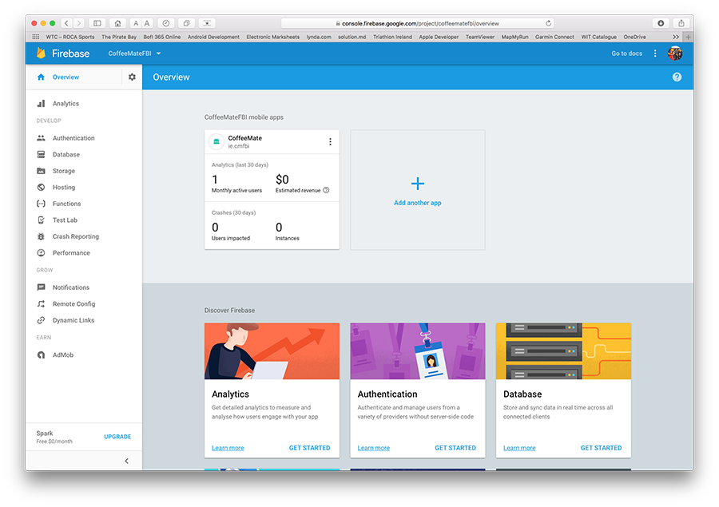
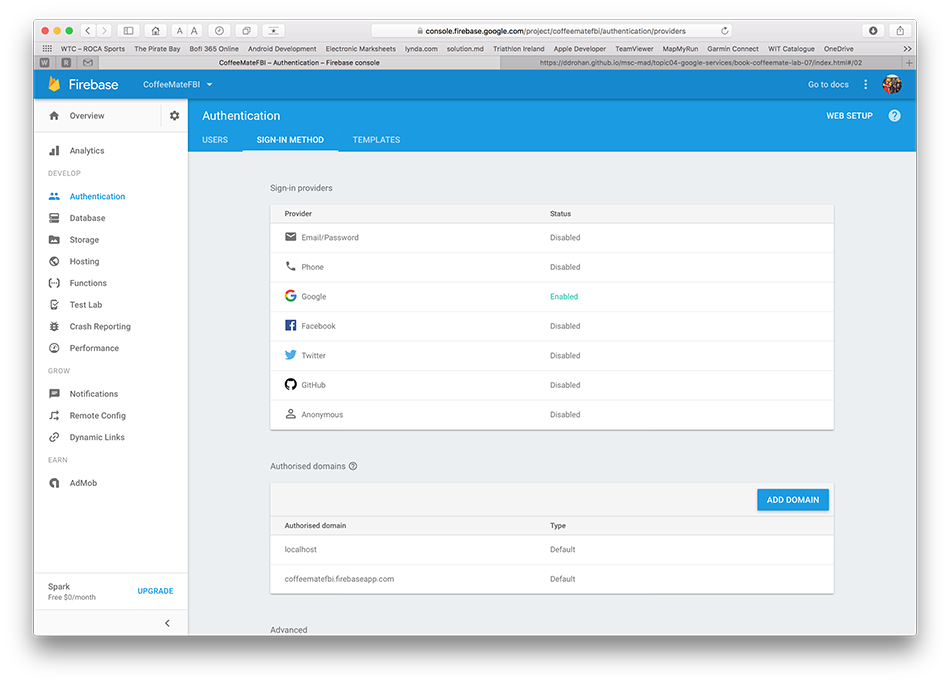

Objectives
This lab 'takes a big step forward', in that we refactor the previous version (6.0) of our Case Study CoffeeMate and introduce Firebase Support via Google Authentication and a Realtime Database in version CoffeeMateFBI.1.0
Setup - Starter Code
It can be quite difficult to try and 'bolt on' Firebase to an Android App, depending on the number and type of APis being used, but we can start with a version which does include a number of the Google APis that we need, namely CoffeeMate.6.0, which you can download here - CoffeeMate.6.0.
As always, It's probably still a good idea to run the App and confirm that the app (or your 6.0 version app) is configured properly and (still) running.
You might also want to rename the app to what I will be referring to throughout the rest of the lab - CoffeeMateFBI.1.0.
On completion of this lab, you will be able to do the following:
Create/Import a new project to your Firebase Console (found here) and configure your project as required
Add Firebase Authentication (including Google Sign-In)
Add CRUD (Create Retrieve Update Delete) functionality via your Firebase Realtime Database
The following steps will help you achieve this, so before we can do anything with Firebase, let's setup our CoffeeMate Project on the Firebase Console.
The instructions on the official developer docs are as good a place to start as any, so check how to 'Add Firebase to your Project' here.
The final list of dependencies/plugins required are as below, so confirm your list against mine and add them in at this stage if you so wish?
dependencies {
compile fileTree(include: ['*.jar'], dir: 'libs')
compile project(':volley')
compile 'com.android.support:appcompat-v7:25.2.0'
compile 'com.android.support:support-v4:25.2.0'
compile 'com.android.support:design:25.2.0'
compile 'com.makeramen:roundedimageview:2.2.1'
compile 'com.android.support.constraint:constraint-layout:1.0.2'
compile 'com.google.code.gson:gson:2.7'
compile 'com.google.android.gms:play-services-auth:11.0.2'
compile 'com.google.android.gms:play-services-maps:11.0.2'
compile 'com.google.android.gms:play-services-location:11.0.2'
compile 'com.google.firebase:firebase-core:11.0.2'
compile 'com.google.firebase:firebase-auth:11.0.2'
compile 'com.google.firebase:firebase-database:11.0.2'
compile 'com.firebaseui:firebase-ui-database:1.0.0'
testCompile 'junit:junit:4.12'
}
apply plugin: 'com.google.gms.google-services'Once you have your project set up, you can continue on to the next step.
Signing In with Firebase Authentication
First of all, make sure you have your Firebase Project set up and you've added your existing CoffeeMate project to it, like so

Notice I've renamed the package to ie.cmfbi - there were a few issues when I initially set up the project with the existing ie.cm package name (which you might get too) like
so I just decided to rename the package. If you take this approach make sure you update your Google Maps APi authorised package name and SHA-1 key on the developer console here https://console.developers.google.com
Also, you'll need an updated google-services.json file so make sure you download it during the setup process
and
Some other useful links
https://console.cloud.google.com/home/dashboard
https://developers.google.com/mobile/add
For this Lab we'll be using Google Sign-In Authentication with Firebase, so visit your firebase console again here https://console.firebase.google.com and turn on the required Authentication.

We'll be using a lot of this https://firebase.google.com/docs/auth/android/google-signin for reference on this step.
Now, open your Login.java and update your GoogleSignInOptions object to 'requestIDToken()' like so
app.mGoogleSignInOptions = new GoogleSignInOptions
.Builder(GoogleSignInOptions.DEFAULT_SIGN_IN)
.requestIdToken(getString(R.string.default_web_client_id))
.requestEmail()
.requestProfile()
.build();Next, add the following property to your CoffeeMateApp
public FirebaseAuth mFirebaseAuth;
public FirebaseUser mFirebaseUser;and bring in and/or update the following
private void firebaseAuthWithGoogle(GoogleSignInAccount acct) {
Log.v(TAG, "firebaseAuthWithGoogle:" + acct.getId());
AuthCredential credential = GoogleAuthProvider.getCredential(acct.getIdToken(), null);
app.mFirebaseAuth.signInWithCredential(credential)
.addOnCompleteListener(this, new OnCompleteListener<AuthResult>() {
@Override
public void onComplete(@NonNull Task<AuthResult> task) {
Log.v(TAG, "signInWithCredential:onComplete:" + task.isSuccessful());
validateFirebaseUser();
// If sign in fails, display a message to the user. If sign in succeeds
// the auth state listener will be notified and logic to handle the
// signed in user can be handled in the listener.
if (!task.isSuccessful()) {
Log.v(TAG, "signInWithCredential", task.getException());
Toast.makeText(Login.this, "Authentication failed.",
Toast.LENGTH_SHORT).show();
}
else
startHomeScreen();
}
});
}
private void validateFirebaseUser()
{
Log.v(TAG,"Calling validateFirebaseUser() " );
if(app.mFirebaseUser == null)
app.mFirebaseUser = FirebaseAuth.getInstance().getCurrentUser();
final String userName = app.mFirebaseUser.getDisplayName();
final String userId = app.mFirebaseUser.getUid();
final String email = app.mFirebaseUser.getEmail();
Log.v(TAG,"Validating Firebase User Details for: " + app.mFirebaseUser.getEmail());
}Add this to your onCreate()
app.mFirebaseAuth = FirebaseAuth.getInstance();and try and work out where you should be calling
firebaseAuthWithGoogle(...)Run your app and keep track of the Logs in Android Studio to verify Firebase Authentication.
If everything is configured correctly, you should now be seeing a new user on your console
and going forward
And for completeness you should probably sign out your current user from Firebase, whenever they log out of the app using
FirebaseAuth.getInstance().signOut();
app.mFirebaseUser = null;
Log.v("coffeemate", "User Logged out of Firebase");The next step will involving Adding coffees to our Firebase Realtime database.
Firebase CRUD - Add/Verify a User
Before you go any further, here's where we're at so far
and remember to retain your own google-services.json file (as this archive doesn't contain one!).
We'll be using some of this http://www.amalhichri.net/android-firebase-realtime-database-basic-cruds/ tutorial for this and subsequent steps.
So based on the above link, go ahead and add "Firebase offline Persistence", wherever you think is most appropriate.
Now, in order to perform any operation on the database, whether it be read or write (or update or delete), you need to get a reference to the database first. the code that follows gives you a reference to the database JSON top node (and a lot more). From here you need to use the child node names to traverse further. And to keep our code as reusable as possible, we'll introduce a few new classes to manage our Firebase database calls (similar to what we did for our SQLite calls).
First, introduce the following into your models package, so that we can associate specific users with their own coffees.
public class User {
public String userId;
public String userName;
public String userEmail;
public String userProfilePic;
public User(){
// Default constructor required for calls to DataSnapshot.getValue(User.class)
}
public User(String userId, String userName, String userEmail, String userProfilePic ){
this.userId = userId;
this.userName = userName;
this.userEmail = userEmail;
this.userProfilePic = userProfilePic;
}
}Create a new interface FBDBListener and for simplicity, place it in the same api package we have our VolleyListener class.
public interface FBDBListener {
void onSuccess(DataSnapshot dataSnapshot);
void onFailure();
}Now, create a new class called FBDBManager and do the same.
Add the following properties
private static final String TAG = "coffeemate";
public DatabaseReference mFirebaseDatabase;
public static String mFBUserId;
public FBDBListener mFBDBListener;and methods (for the moment)
public void open() {
//Set up local caching
FirebaseDatabase.getInstance().setPersistenceEnabled(true);
//Bind to remote Firebase Database
mFirebaseDatabase = FirebaseDatabase.getInstance().getReference();
Log.v(TAG, "Database Connected :" + mFirebaseDatabase.getKey());
}
public void attachListener(FBDBListener listener) {
mFBDBListener = listener;
}
//Check to see if the Firebase User exists in the Database
//if not, create a new User
public void checkUser(final String userid,final String username,final String email) {
Log.v(TAG, "checkUser ID == " + userid);
mFirebaseDatabase.child("users").child(userid).addListenerForSingleValueEvent(
new ValueEventListener() {
@Override
public void onDataChange(DataSnapshot dataSnapshot) {
mFBDBListener.onSuccess(dataSnapshot);
}
@Override
public void onCancelled(DatabaseError databaseError) {
mFBDBListener.onFailure();
}
}
);
}Then, open up your Login activity and update these existing methods
private void firebaseAuthWithGoogle(GoogleSignInAccount acct) {
Log.v(TAG, "firebaseAuthWithGoogle:" + acct.getEmail());
AuthCredential credential = GoogleAuthProvider.getCredential(acct.getIdToken(), null);
app.mFirebaseAuth.signInWithCredential(credential)
.addOnCompleteListener(this, new OnCompleteListener<AuthResult>() {
@Override
public void onComplete(@NonNull Task<AuthResult> task) {
Log.v(TAG, "signInWithCredential:onComplete:" + task.isSuccessful());
validateFirebaseUser();
// If sign in fails, display a message to the user. If sign in succeeds
// the auth state listener will be notified and logic to handle the
// signed in user can be handled in the listener.
if (!task.isSuccessful()) {
Log.v(TAG, "signInWithCredential", task.getException());
Toast.makeText(Login.this, "Authentication failed.",
Toast.LENGTH_SHORT).show();
}
}
});
}
private void validateFirebaseUser()
{
Log.v(TAG,"Calling validateFirebaseUser() " );
if(app.mFirebaseUser == null)
app.mFirebaseUser = FirebaseAuth.getInstance().getCurrentUser();
app.mFBDBManager.checkUser(app.mFirebaseUser.getUid(),
app.mFirebaseUser.getDisplayName(),
app.mFirebaseUser.getEmail());
}and make Login implement the FBDBListener interface.
Add the following to onSuccess()
if(dataSnapshot.exists()){
Log.v(TAG, "User found : ");
}
else{
Log.v(TAG, "User not found, Creating User on Firebase");
User newUser = new User(app.mFirebaseUser.getUid(),
app.mFirebaseUser.getDisplayName(),
app.mFirebaseUser.getEmail(), null);
app.mFBDBManager.mFirebaseDatabase.child("users")
.child(app.mFirebaseUser.getUid())
.setValue(newUser);
}
app.mFBDBManager.mFBUserId = app.mFirebaseUser.getUid();
startHomeScreen();and this to onFailure()
Log.v(TAG, "Unable to Validate Existing Firebase User: ");
Toast.makeText(this,"Unable to Validate Existing Firebase User:",Toast.LENGTH_LONG).show();and see if you can make the necessary modifications to the project to
- open the database 'link' to Firebase on App Startup
- attach your listener and
- verify the currently signed-in user against the database
If it all checks out you should see something like this
Initially, with no users
then with one new user (me :-) )
etc. etc.
We can now verify a user against our database but more importantly, we can associate this user with a specific coffee when we add a coffee to our database - so that's next.
Firebase CRUD - Add a Coffee
At this point, we have to essentially 'break' our app insofar as we need to change our Coffee model to allow us to store a user id with the coffee, when we add it to the firebase database.
First of all, introduce the following property into the coffee models
public String uid;
public double latitude;
public double longitude;and update your constructors accordingly.
Next, introduce the following method into your Coffee class for mapping our fields to JSON for storage
@Exclude
public Map<String, Object> toMap() {
HashMap<String, Object> result = new HashMap<>();
result.put("uid", uid);
result.put("name", name);
result.put("shop", shop);
result.put("rating", rating);
result.put("price", price);
result.put("favourite", favourite);
result.put("usertoken", usertoken);
result.put("googlephoto", googlephoto);
result.put("address", address);
result.put("latitude", latitude);
result.put("longitude", longitude);
return result;
}Finally, introduce the following methods into your FBDBManager class
public void addCoffee(final Coffee c)
{
mFirebaseDatabase.child("users").child(mFBUserId).addListenerForSingleValueEvent(
new ValueEventListener() {
@Override
public void onDataChange(DataSnapshot dataSnapshot) {
// Get user value
User user = dataSnapshot.getValue(User.class);
if (user == null) {
// User is null, error out
Log.v(TAG, "User " + mFBUserId + " is unexpectedly null");
} else {
// Write new coffee here
}
}
@Override
public void onCancelled(DatabaseError databaseError) {
Log.v(TAG, "getUser:onCancelled", databaseError.toException());
}
});
}
private void writeNewCoffee(Coffee c) {
// Create new coffee at /user-coffees/$userid/$coffeeid and at
// /coffees/$coffeeid simultaneously
String key = mFirebaseDatabase.child("coffees").push().getKey();
Map<String, Object> coffeeValues = c.toMap();
Map<String, Object> childUpdates = new HashMap<>();
//All our coffees
childUpdates.put("/coffees/" + key, coffeeValues);
//All coffees per user
childUpdates.put("/user-coffees/" + mFBUserId + "/" + key, coffeeValues);
mFirebaseDatabase.updateChildren(childUpdates);
}and see can you now add a coffee to your firebase database.
If you can, you should be seeing something like this
Experiment with different users to confirm your app is working correctly, like so
so the next step will be to retrieve these coffees from Firebase and display them in the list on the device.
Firebase CRUD - Get All Coffees
At the moment we can see our coffees being added on the Firebase console, but that's not of much use to the user, so this step will involve retrieving all of the users coffees.
To leverage the realtime nature of our firebase database, we are going to make use of a FirebaseListAdapter which you can find out more about here https://github.com/firebase/FirebaseUI-Android/blob/master/README.md
We will need to replace our current version of our custom list adapter with a version that extends the above. To use the latest version of the FirebaseUI project (as of July 2017) we need to make a few changes to our project and module gradle files.
First, open your project build.gradle and make sure you have the following
allprojects {
repositories {
jcenter()
maven {
url "https://maven.google.com"
}
}
}Now open your module build.gradle and confirm the following dependencies
dependencies {
compile fileTree(include: ['*.jar'], dir: 'libs')
compile project(':volley')
compile 'com.android.support:appcompat-v7:25.4.0'
compile 'com.android.support:support-v4:25.4.0'
compile 'com.android.support:design:25.4.0'
compile 'com.makeramen:roundedimageview:2.2.1'
compile 'com.android.support.constraint:constraint-layout:1.0.2'
compile 'com.google.code.gson:gson:2.7'
compile 'com.google.android.gms:play-services-auth:11.0.2'
compile 'com.google.android.gms:play-services-maps:11.0.2'
compile 'com.google.android.gms:play-services-location:11.0.2'
compile 'com.google.firebase:firebase-core:11.0.2'
compile 'com.google.firebase:firebase-auth:11.0.2'
compile 'com.google.firebase:firebase-database:11.0.2'
compile 'com.firebaseui:firebase-ui-database:2.1.0'
testCompile 'junit:junit:4.12'
}Sync your project again and you should be good to go.
Now, replace your existing CoffeeListAdapter with this one
//https://github.com/firebase/FirebaseUI-Android/blob/master/README.md
//https://github.com/firebase/FirebaseUI-Android/blob/master/database/README.md
//https://groups.google.com/forum/#!topic/firebase-talk/O1kJ4VLUg10
public class CoffeeListAdapter extends FirebaseListAdapter<Coffee> {
private OnClickListener deleteListener;
public Query query ;
public CoffeeListAdapter(Activity context, OnClickListener deleteListener,
Query query) {
super(context, Coffee.class,R.layout.coffeerow, query);
Log.v("coffeemate","Creating Adapter with :" + query);
this.deleteListener = deleteListener;
this.query = query;
}
@Override
protected void populateView(View row, Coffee coffee,int position) {
Log.v("coffeemate","Populating View Adapter with :" + coffee);
//Set the rows TAG to the coffee 'key'
row.setTag(getRef(position).getKey());
((TextView) row.findViewById(R.id.rowCoffeeName)).setText(coffee.name);
((TextView) row.findViewById(R.id.rowCoffeeShop)).setText(coffee.shop);
((TextView) row.findViewById(R.id.rowRating)).setText(coffee.rating + " *");
((TextView) row.findViewById(R.id.rowPrice)).setText("€" +
new DecimalFormat("0.00").format(coffee.price));
ImageView imgIcon = (ImageView) row.findViewById(R.id.RowImage);
if (coffee.favourite == true)
imgIcon.setImageResource(R.drawable.ic_favourite_on);
else
imgIcon.setImageResource(R.drawable.ic_favourite_off);
ImageView imgDelete = (ImageView) row.findViewById(R.id.imgDelete);
imgDelete.setTag(getRef(position).getKey());
imgDelete.setOnClickListener(deleteListener);
}
}Open your FBDBManager class and introduce the following methods
public Query getAllCoffees()
{
Query query = mFirebaseDatabase.child("user-coffees").child(mFBUserId)
.orderByChild("rating");
return query;
}and finally, open your CoffeeFragment class and bring in/update the following properties/methods/code extracts
public Query query;
public OnClickListener deleteListener;
//Replace the CoffeeApi calls with
query = app.mFBDBManager.getAllCoffees();
//Replace CoffeeListAdapter call with
CoffeeListAdapter(getActivity(), deleteListener, query);
//Add to onResume()
updateUI();and remove all VolleyListener references and implemented methods.
(We'll sort out deleting and filtering on 'favourites' later on)
Now, run your app again and once you sign in, you should be seeing the coffees associated with the user stored in the Firebase database.
Now if you visit your Firebase console and manually edit some coffee data (change the rating value or the name for example) and keep an eye on your list on your device (all going well!) you'll see the data automatically change, without any swipe/refreshing of the list, demonstrating the FirebaseUI realtime updates, like so
pretty cool I think :)
On to the next step.....
Firebase CRUD - Get Favourite Coffees
At the moment we can see our coffees being added on the Firebase console, and see them displayed in our list in the app, so let's now start to refactor all the other features of the app, starting with a relatively simple job of displaying just the favourite coffees belonging to the user.
First thing to do is open up your FBDBManager class and add the following method, to get our favourite coffees
public Query getFavouriteCoffees()
{
Query query = mFirebaseDatabase.child(/* replace as necessary*/).child(/* replace as necessary*/)
.orderByChild(/* replace as necessary*/).equalTo(true);
return query;
}Then, open your CoffeeFragment class and add
if(favourites)
query = app.mFBDBManager.getFavouriteCoffees();when you think it should be placed.
Experiment with manually changing the 'favourite' field on your console and see what happens when you're viewing your 'Favourites'
Firebase CRUD - Update a Coffee
Up to now, to see any changes/updates to our list of coffees we had to manually make those changes on the console. This step will involve allowing a coffee to be updated on the app and subsequently we'll be able to see those changes happen in realtime on our Firebase console.
Similar to CoffeeMate.6.0 we have to first retrieve the particular coffee from the server and then PUT in back so first, open your FBDBManager class and add the following
public void getACoffee(final String coffeeKey)
{
mFirebaseDatabase.child("user-coffees").child(mFBUserId).child(coffeeKey).addValueEventListener(
new ValueEventListener() {
@Override
public void onDataChange(DataSnapshot dataSnapshot) {
Log.v(TAG,"The read Succeeded: " + dataSnapshot.toString());
mFBDBListener.onSuccess(dataSnapshot);
}
@Override
public void onCancelled(DatabaseError firebaseError) {
Log.v(TAG,"The read failed: " + firebaseError.getMessage());
mFBDBListener.onFailure();
}
});
}
public void updateACoffee(final String coffeeKey,final Coffee updatedCoffee)
{
mFirebaseDatabase.child("user-coffees").child(mFBUserId).child(coffeeKey).addListenerForSingleValueEvent(
new ValueEventListener() {
@Override
public void onDataChange(DataSnapshot dataSnapshot) {
Log.v(TAG,"The update Succeeded: " + dataSnapshot.toString());
dataSnapshot.getRef().setValue(updatedCoffee);
}
@Override
public void onCancelled(DatabaseError firebaseError) {
Log.v(TAG,"The update failed: " + firebaseError.getMessage());
mFBDBListener.onFailure();
}
});
}Once you've fixed any errors, open EditFragment and replace VolleyListener with FBDBListener, and again fix the resultant errors.
Next, to begin with, for completeness (and identifying a few changes we need to make) rename the 'coffeeID' property to 'coffeeKey' - don't forget to make the relevant change in CoffeeFragment.
Then 'attach' the Listener to the fragment and see can you correctly call the 'getACoffee()' method and implement the Listener methods.
You'll need this (and a bit more) in your onResume()
app.mFBDBManager.getACoffee(coffeeKey);and this in the Listener methods
aCoffee = dataSnapshot.getValue(Coffee.class);and remember to call updateUI() to display the coffee data on screen.
The last thing to do is actually update the data on the server once the user clicks 'update' so using this method call
app.mFBDBManager.updateACoffee(coffeeKey,aCoffee);have a go at that.
If you can remember way back to CoffeeMate.6.0, the user could toggle on/off the favourites star independently from having to update the coffee details so just to be complete, we'll do that now too.
Open up FBDBManager class and add the following
public void toggleFavourite(final String coffeeKey,final boolean isFavourite)
{
mFirebaseDatabase.child("user-coffees").child(mFBUserId).child(coffeeKey).addListenerForSingleValueEvent(
new ValueEventListener() {
@Override
public void onDataChange(DataSnapshot snapshot) {
snapshot.getRef().child("favourite").setValue(isFavourite);
}
@Override
public void onCancelled(DatabaseError firebaseError) {
Log.v(TAG,"The toggle failed: " + firebaseError.getMessage());
}
});
}and have a go at that too.
Firebase CRUD - Deleting Coffees
This step involves two features
- deleting a single coffee and
- deleting multiple coffees
so we'll start with the slightly more difficult option - deleting a single coffee.
First, open your FBDBManager class and add the following
public void deleteACoffee(final String coffeeKey)
{
mFirebaseDatabase.child("user-coffees").child(mFBUserId).child(coffeeKey).addListenerForSingleValueEvent(
new ValueEventListener() {
@Override
public void onDataChange(DataSnapshot snapshot) {
snapshot.getRef().removeValue();
}
@Override
public void onCancelled(DatabaseError firebaseError) {
Log.v(TAG,"The delete failed: " + firebaseError.getMessage());
}
});
}You'll need to make use of the deleteListener object we declared earlier, inside your CoffeeFragment's onCreatView() like so
deleteListener = new View.OnClickListener() {
@Override
public void onClick(View view) {
onCoffeeDelete (view.getTag().toString());
}
};This ensures that we bind the listener (and an onClick() event) specifically to the delete button inside our CoffeeListAdapter.
Now, try and work out where deleteACoffee should be called and the minor changes that need to be made to the existing onCoffeeDelete.
To finish this step, deleting multiple coffees is literally one line of code, so try and work that out too (at least without looking at the notes first :) )
and you may find the following method useful?
listView.getChildAt()Firebase CRUD - Searching & Filtering Coffees
At the time of writing (July/2017) there is still no way to search Firebase like you would a normal relational Database using SQL LIKE etc. For reference though and if you fancy seeing if you can integrate any of the following, I found some useful links worth a looking
https://github.com/xdrop/fuzzywuzzy
https://support.google.com/firebase/answer/6318765?hl=en
https://cloud.google.com/bigquery/docs/reference/libraries
https://groups.google.com/forum/#!topic/firebase-talk/kHFSfp7zNDk (and subsequent links within)
I'll revisit this once I have time (or if Firebase adds this functionality :) )
As a result, we're a bit limited in what we can do in terms of searching our list, but we will implement some basic searching & filtering on our 'Search' screen to try and replicate what we had in the previous version of CoffeeMate.
So, first, open your FBDBManager and add the following
public Query nameFilter(String s)
{
Query query = mFirebaseDatabase.child("user-coffees").child(mFBUserId)
.orderByChild("name").startAt(s).endAt(s+"\uf8ff");
return query;
}Next, open your CoffeeFilter and replace it with the following (and fix any import errors)
public class CoffeeFilter extends Filter {
private String filterText;
private CoffeeListAdapter adapter;
private Query query;
private CoffeeFragment fragment;
public CoffeeFilter(Query originalCoffeeQuery, String filterText
,CoffeeListAdapter adapter,CoffeeFragment fragment) {
super();
this.query = originalCoffeeQuery;
this.filterText = filterText;
this.adapter = adapter;
this.fragment = fragment;
}
public void setFilter(String filterText) {
this.filterText = filterText;
}
@Override
protected FilterResults performFiltering(CharSequence prefix) {
FilterResults results = new FilterResults();
if(prefix != null)
if (prefix.length() > 0)
query = fragment.app.mFBDBManager.nameFilter(prefix.toString());
else {
if (filterText.equals("all")) {
query = fragment.app.mFBDBManager.getAllCoffees();
} else if (filterText.equals("favourites")) {
query = fragment.app.mFBDBManager.getFavouriteCoffees();
}
}
results.values = query;
return results;
}
@Override
protected void publishResults(CharSequence prefix, FilterResults results) {
fragment.updateUI((Query) results.values);
}
}Now this will trigger a list of errors so open your CoffeeFragment and SearchFragment classes and update your coffeeilter (in the relevant places) so that it takes a query as the first parameter, instead of the existing list. And do the same for the updateUI() method.
Some refactoring of both classes is necessary at this stage so go ahead and carry out the following
- move the instantiation of your coffeeFilter from CoffeeFragment's onResume() to SearchFragment's onResume()
- remove the following from CoffeeFragment's onResume()
coffeeFilter.setFilter("favourites"); // Set the filter text field from 'all' to 'favourites' coffeeFilter.filter(null); // Filter the data, but don't use any prefix - Add a call to getFavouriteCoffees() on your query reference BEFORE you create the filter in your deleteCoffees() method, while checking for 'favourites'
Run your app once again, and you should be able to see something like the following
Our initial 'Search' screen
Filtering on 'Favourites'

Filtering on String name 'C'
Filtering on String name 'Cu'
If you wish, you can do some housekeeping on the entire project at this stage and remove the mSwipeRefreshLayout references, as we don't actually need it anymore due to the FirebaseUI api and the realtime nature of our database, but I'll leave it in the solution for reference.
The last thing we need to do is make sure our Map is showing the correct marker locations, as currently we're still retrieving from the herokuapp server and not Firebase, so that's next.
Firebase CRUD - Managing our Coffee Map
Currently our MapsFragment is implementing the VolleyListener interface and requesting the list of coffees from the herokuapp server, so this step requires a refactoring of the interface to use, and the call we need to make to get our coffees from Firebase.
First thing to do is add the following to your FBDBManager
public void getAllCoffeesSnapshot()
{
ValueEventListener vel = mFirebaseDatabase.child("user-coffees")
.child(mFBUserId)
.addValueEventListener(
new ValueEventListener() {
@Override
public void onDataChange(DataSnapshot dataSnapshot) {
mFBDBListener.onSuccess(dataSnapshot);
}
@Override
public void onCancelled(DatabaseError firebaseError) {
mFBDBListener.onFailure();
}
});
}This will allow us to load the Map and display the coffees but only AFTER they have been retrieved successfully - our FBDBListener will control when this is triggered.
The changes that need to be made are very similar to how we implemented the VolleyListener interface, so have a go at making the necessary changes. If you simply replace the VolleyListener calls and code with the the FBDBListener implementation, you won't go too far wrong.
You will probably need this code to convert your firebase snapshot into a list of coffees, to add to the Map
List <Coffee> coffeeList = new ArrayList<Coffee>();
for (DataSnapshot coffeeSnapshot: dataSnapshot.getChildren()) {
Coffee c = coffeeSnapshot.getValue(Coffee.class);
coffeeList.add(c);
}Hopefully, you'll then see something like this
Our Firebase coffees
And the same coffees on the Map
All Done!!!